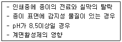
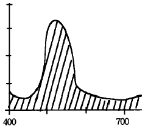
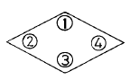
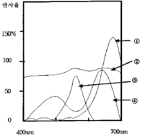

인쇄기사 (2004-08-08 기출문제)
1과목: 인쇄공학
1. 시안(Cyan) 인쇄용으로 많이 사용하는 프탈로시아닌블루 안료의 흡유량은? (안료 사용량 5 g, 정제 아마인유 사용량 3g)
- 37.5 %
- 40.0 %
- 60.0 %
- 62.5 %
(정답률: 알수없음)

2. 잉크를 당겨 찢을 때 잉크 내부에서 당겨지지 않으려고 저항하는 힘은?
- 레올로지
- 점탄성
- 플로우
- 택크
(정답률: 알수없음)
3. 인쇄실내의 습도가 40 % 이하일 때 발생되는 주된 현상은?
- 잉크의 유화현상
- 인쇄용지의 정전기 발생
- 인쇄물의 색상불량
- 인쇄용지의 건조불량
(정답률: 알수없음)
4. 다음과 같은 원인과 가장 관계있는 인쇄사고는?

- 뒤묻음
- 겹붙음
- 배어남
- 바탕더러움
(정답률: 알수없음)
5. 인쇄물의 내용, 목적, 용도에 따라 표면가공을 하는데 왁스칠(waxing)의 가장 알맞는 용도는?
- 중량감이 있고 장기보존 등에 가장 많이 사용
- 종이컵, 쥬스컵, 식료품 등의 포장가공에 많이 이용됨
- 접착제로 초산알루미늄을 이용하여 인쇄면을 보호하는데 주로 사용
- 잉크의 퇴색방지로 내구성 증가를 위해 초산비닐 수지를 혼합 사용함
(정답률: 알수없음)
6. 표면 가공법 중 셀룰로이드 입히기의 접착제로 주로 사용 되는 것은?
- 에스테르 고무
- 코펄
- 초산알루미늄
- 파라핀 왁스
(정답률: 알수없음)
7. 산업재해의 원인으로 간접적 원인에 해당되지 않는 것은?
- 기술적 원인
- 인적, 물(物)적 원인
- 정신적 원인
- 교육적 원인
(정답률: 알수없음)
8. 유체(流體)가 파이프관속을 일정한 속도로 흐를 때, 관벽쪽의 가까운 곳은 유체속도가 느리고 관벽에서 멀어질 수록 빠르게 되는 것은 유체와 파이프관 벽의 분자 마찰에 의해 좌우되는데 이 성질은 인쇄잉크가 가지는 물리적 성질 중 무엇과 가장 관계 있는가?
- 점성
- 탄성
- 전이성
- 젖음성
(정답률: 알수없음)
9. 택(tack)과 가장 관계가 없는 것은?
- 웨트 프린팅(wet printing)
- 피킹(picking)
- 점탄성
- 플러싱(flushing)
(정답률: 알수없음)
10. 어떤 물질이 외력에 대하여 직각으로 작용하는 저항력(스트레스)은 무엇인가?
- 노말 스트레스(normal stress)
- 벡터 스트레스(vector stress)
- 전단 스트레스(shear stress)
- 유체 스트레스(fluid stress)
(정답률: 알수없음)
11. 인쇄물의 변색 및 퇴색현상을 일으키는 주 태양광은?
- 적외선
- 자외선
- 주황광
- 청녹광
(정답률: 알수없음)
12. 인쇄실의 공기조화를 효율적으로 하기 위한 다음 방법 중 잘못된 것은?
- 인쇄실은 북쪽으로 창을 내어서는 안된다.
- 인쇄실 내의 발열물은 밖에 설치한다.
- 공기조화장치의 바람의 세기를 조절해야 한다.
- 공기조화장치의 바람의 방향을 조절해야 한다.
(정답률: 알수없음)
13. 잉크나 물 등 액체가 피인쇄체 등에 묻을 때 일어나는 젖음과 가장 관계있는 것은?
- 확산 젖음
- 침적 젖음
- 침투 젖음
- 접착 젖음
(정답률: 알수없음)
14. 인쇄사고 중 휠업(fill-up)이란 ?
- 콜렉팅 현상으로 생기는 더러움
- 케이킹 현상에 의해 화선이 막히는 현상
- 뒷묻음에 의한 사고
- 인쇄판에 붙어있는 더러움
(정답률: 알수없음)
15. 잉크의 전이 현상을 정량적으로 측정하는 방법이라고 볼 수 없는 것은?
- 인쇄전과 후에 화선부의 면적을 확대경으로 분석
- 인쇄전과 후에 인쇄판의 중량 측정
- 방사선 원소를 잉크 중에 넣고 가이거 계수기를 사용하여 측정
- 안료를 잉크 중에 넣어서 인쇄물에서 추출한 후 비색법으로 측정
(정답률: 알수없음)
16. 인쇄잉크를 제조할 때 잉크가 충분히 이겨졌는지를 시험하는 측정기는?
- 잉코미터(inkometer)
- 페이도미터(fadeometer)
- 분광광도계(sepectrophotometer)
- 입도측정기(grindometer)
(정답률: 알수없음)
17. 책의 표면 가공의 목적과 가장 관계가 없는 것은?
- 잉크퇴색의 방지
- 인쇄지면의 광택내기
- 내약품성 증대
- 원가절감의 효과
(정답률: 알수없음)
18. 일정한 근무기간 동안에 발생한 상해자 수가 100명이고 그 기간 동안의 평균 근로자 수가 1000명이라면 천인율은 얼마인가?
- 100
- 200
- 300
- 400
(정답률: 알수없음)
19. 망점 인쇄에서 민판 인쇄물의 농도가 0.79이고, 망점인쇄 부의 농도가 0.76일 경우의 contrast는(%)?
- 0.03
- 1.20
- 1.55
- 3.80
(정답률: 알수없음)
20. 인쇄시 종이의 뜯김(picking)이 발생하는 원인과 가장 거리가 먼 것은?
- 종이 표면의 도피층이 약하다.
- 잉크의 공급량이 많고 택이 약하다.
- 잉크의 tack이 강하다.
- 잉크피막이 두껍다.
(정답률: 알수없음)
2과목: 인쇄재료학
21. 잉크시험기인 태코미터(tackometer)로 측정하지 못하는 항목은?
- 잉크의 유동성(fluidity)
- 잉크의 택(tack)
- 비산(misting)시험
- 물균형(water balance)
(정답률: 알수없음)
22. 인쇄잉크의 피복저항에 대한 설명 중 틀린 것은?
- 인쇄압이 증가함에 따라 피복저항은 증가한다.
- 인쇄속도가 증가함에 따라 피복저항은 증가한다.
- 피복저항이 증가하면 필요한 최저 잉크량이 증가한다.
- 평활도와 피복저항은 직접적인 관계가 있다.
(정답률: 알수없음)
23. 고급 인쇄종이를 제조하기 위해서는 주원료로 사용된 펄프의 특성이 종이의 지합 즉, 펄프의 결합 상태가 균일하게 형성하는데 적합해야 한다. 다음 중 종이의 지합에 가장 크게 영향을 미치는 것은?
- 펄프 섬유장
- 펄프 섬유의 색상
- 펄프 섬유의 냄새
- 종이 제조시 사용되는 물의 상태
(정답률: 알수없음)
24. 종이가 불투명하고 지면을 치밀하게 하기 위한 것은?
- 아교
- 수산화나트륨
- 황산바륨
- 송진
(정답률: 알수없음)
25. HLB(Hydrophilic-lipophilic balance value)값이 4인 용액 50 %와 HLB 값이 10인 용액 50 %를 함께 섞었을 때 이것의 HLB값은 얼마인가?
- 0
- 5
- 7
- 10
(정답률: 알수없음)
26. 환절기에는 종이에 변형이 와서 인쇄시에 트러블(가늠맞춤)을 일으킬 가능성이 커진다. 이를 사전에 방지하기 위해 종이 저장시 가장 유의해야 할 사항은?
- 일광 관리
- 온도 관리
- 흡·탈습 관리
- 지분 관리
(정답률: 알수없음)
27. 종이는 다양한 원료가 혼합되어 만들어지고 초지 과정에 있어서 표리차(표면과 이면의 평활도 및 구조적 차이)가 발생한다. 표리차가 심할 경우 발생할 수 있는 가장 큰 용지의 문제점은?
- 인장강도가 증가하여 강도적 특성이 향상된다.
- 대기 중 습도를 잘 흡수하게 되기 때문에 강도가 약해진다.
- 표면과 이면의 수분 흡수 또는 방출의 차이 때문에 종이를 재단한 후 여러가지 형태로 변형되기 쉽다.
- 표리차 때문에 발생하는 특별한 문제점은 없다.
(정답률: 알수없음)
28. IGT인쇄적성 실험기로 잉크전이율을 시험하려 한다. 다음 종이 중 가장 빨리 최대 전이율에 도달하는 지종은?
- 신문용지
- 백상지
- 서적지
- 아트지
(정답률: 알수없음)
29. 일반적인 평판 인쇄용 잉크가 건조되는 반응으로 가장 옳은 것은?
- 용제증발
- 광경화
- 산화중합
- 냉각응고
(정답률: 알수없음)
30. 고무 블랭킷이 갖추어야 할 성질이 아닌 것은?
- 전이성
- 복원성
- 배지성
- 흡수성
(정답률: 알수없음)
31. 다음 중에서 뒷묻음방지용 컴파운드에 가장 많이 사용 되는 물질은?
- 왁스
- 아마인유
- BHT
- 로진
(정답률: 알수없음)
32. 종이의 습도조절불량, 인쇄기의 앞맞춤, 옆맞춤의 조정이 잘못되었거나 종이의 조작이 적절하지 못한데서 가장 일어나기 쉬운 현상은?
- 미스팅(misting)
- 블리딩(bleeding)
- 초킹(chalking)
- 미스레지스터(misregister)
(정답률: 알수없음)
33. 건성유가 아닌 것은?
- 아마인유
- 동유
- 피마자유
- 페릴라유
(정답률: 알수없음)
34. I.P.A(이소프로필알콜)를 사용하는 축임물의 장점이 아닌 것은?
- 표면장력이 낮다.
- 잉크의 건조가 빠르다.
- 냉각효과가 있다.
- 환경오염이 없다.
(정답률: 알수없음)
35. 종이의 평량이 일정하다면 종이 제조 공정에 있어서 두께에 가장 큰 영향을 미치는 공정은?
- 고해 공정
- 초지 공정
- 프레스 공정
- 탈묵 공정
(정답률: 알수없음)
36. 유기안료와 비교하여 무기안료의 특성을 나타낸 것 중 잘못된 것은?
- 비중이 높다.
- 투명성이 좋다.
- 은폐력이 좋다.
- 내광성이 좋다.
(정답률: 알수없음)
37. 일반적으로 오프셋윤전의 경우 웨트인쇄(Wet printing)에서는 후쇄(後刷)가 될수록 잉크의 택은 어떻게 해야 하는가?
- 택을 낮게 해야 한다.
- 택을 아주 높게 해야 한다.
- 택을 약간 높게 해야 한다.
- 택과 관계가 없다.
(정답률: 알수없음)
38. 자외선경화잉크라고도 하며 잉크에 용제가 함유되어 있지 않기 때문에 인쇄 중에 용제 증기가 발생하지 않는 것은?
- UV잉크
- 히트세트잉크
- 퀵세트잉크
- 촉매잉크
(정답률: 알수없음)
39. 기체투과성이 작고 내오존성, 내노화성, 전기절연성 등은 우수하지만 반발탄성이 작아 자동차 타이어에 사용되고 디엔계 고무와의 혼합성이 나쁘며 접착성도 좋지 않은 특성이 있는 것은?
- 니트릴 고무
- 부틸 고무
- 네오프렌 고무
- 천연 고무
(정답률: 알수없음)
40. 시트(sheet)지가 가장자리에 수분을 흡수하면 팽윤하게 되고 내부는 변하지 않게 되어 물결치는 현상으로서 대책 으로는 종이의 보관 창고나 작업장의 상대습도를 일정하게 유지해야 하는 것은?
- 지절
- 웨이비 에지(wavy edge)
- 코클링(cockling)
- 컬(curl)
(정답률: 알수없음)
3과목: 특수인쇄학
41. 표면에 돌출된 부분과 오목 부분의 경계부분에서 인접한 화상을 인쇄할 때 적합한 패드는?
- 경도가 큰 패드
- 삼각형 패드
- 경도가 작은 패드
- 아주 부드러운 패드
(정답률: 알수없음)
42. 플렉소 제판의 종류 중 감광성수지 제판에서 판의 경도가 과잉일 때 주된 원인은?
- 빛쬠 과도
- 현상 부족
- 후처리 과도
- 표면 경막처리 과도
(정답률: 알수없음)
43. 스크린 인쇄의 특징이 아닌 것은?
- 타인쇄에 비해 인쇄된 잉크층이 두껍다.
- 타인쇄에 비해 인쇄판이 유연하다.
- 타인쇄에 비해 인쇄압이 적다.
- 간접인쇄 방식이다.
(정답률: 알수없음)
44. 콜레스테릭 액정이 액정온도계에 주로 사용되는 이유는?
- 층구조를 이루기 때문이다.
- 점도가 낮기 때문이다.
- 리엔트란트 액정이기 때문이다.
- 나선구조를 이루기 때문이다.
(정답률: 알수없음)
45. 그라비어 인쇄의 특징이 아닌 것은?
- 풍부한 색채 표현이 가능하다.
- 연속계조 사진 인쇄가 가능하다.
- 고속인쇄가 가능하다.
- 교정인쇄가 간단하다.
(정답률: 알수없음)
46. 그라비어 제판에서 판의 부식액으로 많이 사용되는 것은?
- HNO3
- NH4NO3
- H2SO4
- FeCl3
(정답률: 알수없음)
47. 그라비어 인쇄시 잉크의 소비량과 가장 관련이 적은 것은?
- 광택 연마의 정도
- 피인쇄물의 흡수성
- 잉크의 점도
- 기계속도, 독터각도
(정답률: 알수없음)
48. 블랭킷에서 피인쇄체로 100% 잉크의 전이가 가능한 인쇄 방식은?
- 전사 인쇄
- 셀로판 인쇄
- 입체 인쇄
- 디지털 인쇄
(정답률: 알수없음)
49. 플렉소 인쇄기에서 아닐록스 롤러(anilox roller)의 기능에 대한 설명 중 옳은 것은?
- 잉크냄 롤러로부터 잉크 옮김 롤러에 잉크를 균일하게 전이한다.
- 판통에 부착된 인쇄판에 잉크를 제어해서 균일한 피막으로 공급한다.
- 판통과 압통 사이에 종이가 공급되는 시간을 일정하게 조절하고 무리한 인압을 제어한다.
- 압통에 맞물려 장착되어 급지부에서 피인쇄체의 크기와 관계없이 인쇄시 두루마리에 일정한 장력을 유지시켜 준다.
(정답률: 알수없음)
50. 액정 디스플레이의 특성과 거리가 먼 것은?
- 색표시에 있어서 채도가 높다.
- 저전압 표시 구동이 된다.
- 자체로 빛을 내지 않는 수광형이다.
- 패턴이 자유롭다.
(정답률: 알수없음)
51. 스크린사의 물리적인 성능을 표시하는 방법으로 가장 적당한 것은?
- 특성곡선
- 시성곡선
- S-S 곡선
- 그라데이션 곡선
(정답률: 알수없음)
52. 잉크제트 인쇄에서 매트릭스(matrix)란 ?
- 선의 규칙적인 배열을 말하며 1인치 내의 선의 수
- 점의 규칙적인 배열을 말하며 1인치 내의 점의 수
- 가로, 세로로 나열되어 있는 선의 수을 곱하여 밀도로 나타낸 것
- 가로, 세로로 나열되어 있는 점의 수를 곱하여 밀도로 나타낸 것
(정답률: 알수없음)
53. 일반적인 곡면 스크린 인쇄에 대하여 바르게 설명한 것은?
- 피인쇄체는 스크린판에 접촉하여 움직이는 쪽으로 회전한다.
- 스퀴지는 좌우로 움직인다.
- 스크린은 고정되고 스퀴지는 좌우로 움직인다.
- 피인쇄체는 스퀴지가 움직이는 쪽으로 이동한다.
(정답률: 알수없음)
54. 그라비어 인쇄에 있어서 잉크 번짐 대책 수단이 아닌 것은?
- 판통 전후의 장력을 적정하게 한다.
- 인압을 적절하게 한다.
- 잉크점도를 낮춘다.
- 독터 칼날을 연마하여 각도를 세운다.
(정답률: 알수없음)
55. 입체 인쇄(stereoscopic printing)에서 입체감을 위해 사용되는 것은?
- 아포크로매트 렌즈(apochromat lens)
- 렌티큘러 렌즈(lenticular lens)
- 애너스티그매틱 렌즈(anastigmatic lens)
- 슈퍼 애크로매틱 렌즈(super achromatic lens)
(정답률: 알수없음)
56. 비즈니스 폼 인쇄기 중에서 머신 펀칭, 파일펀칭, 가로와 세로 머신 펀칭 등을 하는 부분은?
- 급지 장치
- 접지 및 배지 장치
- 인쇄 장치
- 가공 장치
(정답률: 알수없음)
57. 스크린인쇄에서 직접감광제판법의 인쇄판에 사용되는 감광액의 구비조건이 아닌 것은?
- 온· 습도의 변화에 안전하며 수축 등이 일어나지 말아야 한다.
- 핀홀(pinhole) 또는 막이 갈라지지 않아야 한다.
- 화선이 잘 빠지고 선명하게 현상되어야 한다.
- 도포시 스크린사와의 접착성이 약해 탈막하기 쉬워야 한다.
(정답률: 알수없음)
58. 골판지에 사용되는 타발기의 일반적인 형식은?
- 실린더식
- 로터리식
- 원압식
- 수동식
(정답률: 알수없음)
59. 패드 인쇄에서 패드의 역할은?
- 비화선부의 잉크를 제거
- 인쇄판 고정
- 인쇄판에 잉크 전이
- 화상을 피인쇄체에 전이
(정답률: 알수없음)
60. 플렉소 인쇄기의 종류에 속하지 않는 것은?
- 드럼형
- 인라인형
- 투라인형
- 스톡형
(정답률: 알수없음)
4과목: 인쇄색채학
61. 아래 그래프의 빚금친 부분이 나타내고 있는 부분의 색에 해당되는 것은?[그래프상의 가로축은 파장(nm),세로축은 반사율을 개략적으로 나타낸 것임]

- 빨강색 의상
- 파랑색의 하늘
- 녹색의 종이
- 노랑색의 꽃
(정답률: 알수없음)
62. 인쇄에서 사용되는 원색을 혼합하여 만들어진 2차색이 아닌 것은?
- Red
- Green
- Magenta
- Blue
(정답률: 알수없음)
63. 분광반사율(分光反射率)의 고저(高低)를 물리적으로 말하는 것은?
- Hue
- Value
- Chroma
- Saturation
(정답률: 알수없음)
64. 다음 중에서 개구색에 대한 설명이 틀린 것은?
- 작은 구멍을 통해 볼 때의 지각색을 의미한다.
- 순수히 색만을 느끼는 지각상태를 개구지각이라고 한다.
- 색채를 측정하는 광학장치의 시야속에서 보이는 것과 같은 색을 말한다.
- 빛으로 자극하는 물체 자체에 대하여 지각을 일으키는 것을 조건으로 한다.
(정답률: 알수없음)
65. 빛의 흡수 및 반사와 관련된 색의 특성 중 틀린 것은?
- 하양은 모든 파장을 반사시킨다.
- 노랑은 파랑을 흡수시킨 빨강과 초록 파장의 혼합 반사이다.
- 자주(magenta)는 빨강을 흡수시킨 파랑과 초록파장의 혼합반사이다.
- 검정은 모든 파장을 흡수한다.
(정답률: 알수없음)
66. Munsell 표색기호로 5YR 5/10인 색과 10YR 6/8인 색을 비교했을 때 앞의 색은 뒤의 색에 비하여 어떤 차이가 있는가?
- 명도가 높고, 채도는 낮으며, 색상은 노랑빛이 더 많다.
- 명도가 낮고, 채도는 높으며, 색상은 빨강빛이 더 많다.
- 명도가 낮고, 채도는 높으며, 색상은 노랑빛이 더 많다.
- 명도가 높고, 채도는 낮으며, 색상은 빨강빛이 더 많다.
(정답률: 알수없음)
67. 정열, 뜨거움, 용기, 자극 등을 상징하며 운동량이 높은 색채는?
- 노랑
- 파랑
- 빨강
- 초록
(정답률: 알수없음)
68. 다음의 색채 배색 중 시인성이 가장 높은 색채는?
- 빨강 바탕에 파랑
- 파랑 바탕에 초록
- 검정 바탕에 노랑
- 하양 바탕에 주황
(정답률: 알수없음)
69. 오스트발트의 등색상 3각형에서 다음 ④번 칸에 들어 갈 용어는?

- 기호
- 백색량
- 흑색량
- 색량
(정답률: 알수없음)
70. 비누방울이나 기름막이 쳐진 물의 표면, 그리고 얇은 막으로 덮힌 물체에서 관찰되는 무지개 현상을 일으키는 색을 무엇이라고 하는가?
- 공간색
- 금속색
- 형광색
- 간섭색
(정답률: 알수없음)
71. 서로 보색 관계가 아닌 것은?
- 노랑 - 남색
- 주황 - 자주
- 빨강 - 청록
- 연두 - 보라
(정답률: 알수없음)
72. 색필터의 혼색에 관한 설명으로 올바른 것은?
- 각기 다른 색필터는 각각 그 색의 파장성분만을 빛으로 통과시킨다.
- 빛이 필터를 통과할 때 흡수되기 때문에 혼색의 결과는 원래 개개의 색보다 밝아진다.
- yellow, cyan, magenta의 필터를 모두 겹치면 빛이 모두 통과하게 되어 흰색이 된다.
- cyan과 magenta 필터를 겹치면 빛이 전혀 통과하지 못하므로 어둡게 보인다.
(정답률: 알수없음)
73. 가법혼색의 원리에 의하여 심리-물리적인 빛의 혼색 실험에 기초한 색을 표시하는 체계로, 1931년에 국제 조명위원회에서 스펙트럼의 세 가지 자극치(xλ·yλ·zλ)를 근거로 하여 만들어진 표색계를 무엇이라고 하는가?
- 먼셀 표색계
- 루터 뉴베르그 표색계
- CIE 표준 표색계
- NCS 표준 표색계
(정답률: 알수없음)
74. 감색혼합법에 관련된 내용으로 적합하지 않은 것은?
- 사진, 영화, TV는 감색법만을 이용한다.
- 인쇄공정에는 Cyan, Magenta, Yellow, Black의 색이 필요하다.
- 인쇄잉크에 포함된 불순물에 의해 완벽한 검정색은 재현되지 않는다.
- 사진현상에 있어서는 Cyan, Magenta, Yellow의 색이 필요하다.
(정답률: 알수없음)
75. 색상환은 색채의 체계화를 위해 자주 사용되는데 다음 중 색상환을 만들기 위해 고려해야 될 점이 아닌 것은?
- 최소한의 기본색을 결정한다.
- 일관성이 있는 기본색 이름을 부여한다.
- 색상환의 각 색들 반대쪽에 보색이 오도록 배치한다.
- 색의 밝기별로 배열하되, 색채식별역에 따른 순차 순대로 나열한다.
(정답률: 알수없음)
76. 물리학적인 빛의 3원색 이론을 효과적으로 표현한 색상환으로, 우리 나라의 산업규격과 교육용 색상환으로 채택된 먼셀의 색상환은, 기본색으로 빨강·노랑·초록·파랑·보라를 기준으로 배치하고, 그 색들의 물리보색인 ( )·( )·( )·( )·( )를 삽입시켜 배열시킨 것이다. 빈칸에 맞는 것은?
- 녹색·남색·연지·주황·연두
- 청록·바다·자주·남색·보라
- 감청·청록·주황·연두·자주
- 청록·남색·자주·주황·연두
(정답률: 알수없음)
77. 메타메리즘(metamerism)에 대한 설명이 아닌 것은?
- 물체색에 포함되어 있는 서로 다른 안료의 특성이 시각에 의해 동일시 되는 것으로 조명광이 다르더라도 항상 같은 색으로 느껴진다.
- 물체색으로부터 눈에 입사하는 색자극이 서로 같기 때문이다.
- 분광반사율이나 투과율이 달라도 어떤 조명광 아래에서는 같은 색으로 보인다.
- 물체색의 등색은 분광반사율이나 분광투과율이 동일하여야 한다.
(정답률: 알수없음)
78. 태양의 직사광에 의하여 조명된 물체색을 나타낼 때 사용되는 CIE 표준광은?
- 표준광 A
- 표준광 B
- 표준광 C
- 표준광 D65
(정답률: 알수없음)
79. 다음 그림은 여러 가지 색료의 분광반사율을 나타낸 것이다. 형광색료에 해당하는 것은?

- ①
- ②
- ③
- ④
(정답률: 알수없음)
80. 색의 3속성을 3차원 공간속에 계통적으로 배열한 것은?
- 색상환
- 색도도
- 색입체
- 색도판
(정답률: 알수없음)
5과목: 인쇄작업론 및 품질관리
81. 인쇄부의 3통 실린더 중에서 통꾸밈시 어느 통이 기준이되어 패킹(packing)량을 조정하는가?
- 판통
- 블랭킷통
- 압통
- 급지통
(정답률: 알수없음)
82. TQM(total quality management)의 목적은 품질의 지속적인 개선으로 기업의 번영을 추구하는 것이다. 이러한 목적을 달성하기 위해서는 4가지의 기본 원리가 구축되어야하는데 이 4가지 기본 원리에 해당되지 않는 것은?
- 고객중심
- 공정개선
- 총체적참여
- 경영자 리더쉽
(정답률: 알수없음)
83. 다음 중 스택(stack)형 플렉소 인쇄기의 특징을 가장 옳게 설명한 것은?
- 한 개의 대형 압통 주위에 여러 개의 판통을 배열함으로써, 각 색의 중첩인쇄 과정에서 가늠맞춤이 정확하게 이루어진다.
- 각 색의 인쇄부를 동일한 평면 상에 수평으로 배열함으로써, 따내기(diecutting)와 같은 추가 작업을 연속적으로 수행할 수 있다.
- 표준형이라고 할 수 있으며, 각 색의 인쇄부를 수직으로 중첩하여 배열함으로써 작업자의 접근이 용이하여 인쇄기 상의 개조와 보수·유지를 경제적으로 할 수 있다.
- 각 색의 인쇄부를 수평으로 나란히 배열함으로써, 작업자의 접근이 용이하여 인쇄기 상의 개조와 보수·유지를 경제적으로 할 수 있다.
(정답률: 알수없음)
84. 알루미늄덩어리(slug)를 충격 압출법으로 성형한 것에 볼록판 오프셋 인쇄 방식으로 인쇄하는 것은?
- 전사 인쇄
- 튜브 인쇄
- 알루미늄박 인쇄
- 플라스틱 필름 인쇄
(정답률: 알수없음)
85. 플렉소그래피 인쇄에서 가장 많이 사용되는 가압 방식은?
- 무압식
- 원압식
- 윤전식
- 평압식
(정답률: 알수없음)
86. 윤전 인쇄기의 접지 장치에 속하지 않는 장치는?
- 슬리터(slitter)
- 삼각판(former)
- 니핑 롤러(nipping roller)
- 냉각 롤러(cooling roller)
(정답률: 알수없음)
87. 오프셋 윤전기의 실린더 갭(cylinder gap)에 대한 다음 설명 중 옳은 것은?
- 실린더 갭은 실린더가 1회전할 때마다 종이의 가늠 맞춤 장치와 삽지 장치가 작동할 수 있는 일정한 시간을 제공해 주는 중요한 역할을 한다.
- 실린더의 갭이 커지면 가늠맞춤에 필요한 시간적인 여유가 줄어들며, 일정한 판의 크기에 대하여 실린더의 지름이 커지므로 고속인쇄에 유리하게 된다.
- 실린더 갭 부분에 해당되는 종이의 면적만큼은 인쇄가 되지 않고 손지가 되므로 갭의 폭은 최소한으로 하는 것이 좋다.
- 실린더 갭은 판 클램프(clamp)의 설치 장소를 제공해주는 동시에 잉크 묻힘롤러와 옳김롤러의 작동을 원활하게 하는 역할을 한다.
(정답률: 알수없음)
88. 잉크와 물이 접촉하면서 롤러의 격렬한 혼합작용으로 일어나며, 평판 오프셋 인쇄에서 비화선부에 잉크가 묻어서 나타나고, 더러움의 위치가 종이마다 일정하지 않고 이동하며, 물을 묻힌 스펀지로 닦아내면 쉽게 제거되지만 금방 다시 나타나는 인쇄품질 불량현상과 가장 관계있는 것은?
- 잉크 쌓임(piling)
- 뜬더러움(tinting)
- 잉크 날음(flying)
- 바탕더러움(scumming)
(정답률: 알수없음)
89. 일반적인 다색 그라비어(Gravure) 윤전인쇄기의 단점으로 볼 수 없는 것은?
- 인쇄시 농담의 변동이 크며, 일정한 품질 확보가 곤란하다.
- 제판 후에는 수정이 불편하다.
- 비교적 거친 종이에도 인쇄 효과가 크다.
- 제조 원가가 타 판식에 비하여 높다.
(정답률: 알수없음)
90. 종이의 뒤쪽에 있는 빨대로 종이를 들어 올린 후 앞쪽에 있는 전진용 빨대로 전진시켜 종이가 겹친 상태로 연속 급지되는 방식은?
- 스트림 피더(stream feeder)
- 유니버설 피더(universal feeder)
- 덱스터 피더(dexter feeder)
- 네거 피더(nega feeder)
(정답률: 알수없음)
91. 매엽그라비어 인쇄기의 판통에 대한 설명 중 적당하지 않은 것은?
- 매엽기는 압통이 종이를 집기 때문에 종이의 주고 받는 관계는 변화시키지 않는 것이 좋고 보통은 판통의 위치를 바꿔 인압을 가한다.
- 판통의 지름은 압통의 유효지름과 일치시켜 둔다.
- 운전 중 압통의 그리퍼 부근에서는 인압이 제로(0)로 되어 집는 곳에서 매회전마다 아주 강압이 걸린다.
- 판통과 압통의 기어 물림은 가압시에 빽러쉬가 가능 한한 많도록 한다.
(정답률: 알수없음)
92. 국전지의 면적은 4.6전지 면적의 몇 % 인가?
- 약 60 %
- 약 70 %
- 약 80 %
- 약 90 %
(정답률: 알수없음)
93. 다음 중 평판 오프셋 인쇄기의 이상적인 잉크장치가 갖추어야 할 조건을 잘못 설명한 것은?
- 민인쇄부의 전체 면적에 걸쳐서 잉크층의 농도가 균일하게 인쇄되어야 한다.
- 전체 인쇄물에 대하여 잉크의 공급량이 일정하게 유지되어야 한다.
- 판 표면의 화선부와 비화선부를 마모시키지 않아야 한다.
- 판의 전체 폭에 걸쳐서 단위 길이 당 축임물의 공급량이 항상 일정해야 한다.
(정답률: 알수없음)
94. 다음 중 오프셋 윤전기의 냉각 장치를 바르게 설명한 것은?
- 냉각 장치는 냉각에 의하여 인쇄 품질과 종이의 장력을 안정시키는 역할을 한다.
- 냉각 장치는 보통 3~4개의 실린더로 구성되고, 실린더 내부에 공기를 순환시켜서 냉각하는 구조로되어 있다.
- 냉각 장치는 잉크 중의 휘발성 물질을 제거하여 잉크막을 경화시킨다.
- 특히 냉각수 온도가 높으면 냉각 실린더 표면에 물방울이 생겨서 종이가 늘어나거나 얼룩이 생긴다.
(정답률: 알수없음)
95. 고무통(blanket)에 종이가 달라붙는 원인과 가장 거리가 먼 것은?
- 인압 과다
- 블랭킷의 노화
- 강한 잉크택
- 두꺼운 종이
(정답률: 알수없음)
96. 스타타깃(star target)의 주된 용도와 관계없는 것은?
- 스크린 선수(screen ruling)와 무아레(moire)
- 망점의 퍼짐(dot gain)
- 슬러(slur)
- 더블링(doubling)
(정답률: 알수없음)
97. 송지장치에서 운반과정 중 종이를 안정시켜 종이의 흐름을 좋게 하는 보조장치는?
- 고무바퀴
- 급지 롤러
- 급지테이프
- 종이굴림대 및 누름판
(정답률: 알수없음)
98. 오프셋 윤전기의 축적식(accumulation or zero speed type) 자동 급지 연결 장치를 바르게 설명한 것은?
- 급지 중인 두루마리(roll)에서 미리 종이를 충분히 풀어서 저장해 두고 두루마리를 정지시킨 상태에서 새 두루마리와 연결하는 방식
- 새 두루마리(roll)의 표면속도를 인쇄 속도로 가속시켜서 급지 중인 두루마리가 회전하는 상태에서 연결하는 방식
- 급지 중인 두루마리(roll)에서 미리 종이를 충분히 풀어서 저장해 두고 두루마리가 회전하는 상태에서 새 두루마리와 연결하는 방식
- 새 두루마리(roll)의 표면속도를 인쇄 속도로 가속시키고 급지 중인 두루마리를 정지시킨 상태에서 연결하는 방식
(정답률: 알수없음)
99. 품질관리 활동을 전개하는데 있어서 기본적인 Q.C수법으로 알려진 7가지 도구 중 불량, 결점, 고장 등에 대하여 어떤 항목에 문제가 있는지, 그 영향은 어느 정도인지를 알아내는데 사용되는 방법은?
- 히스토그램(histogram)
- 산점도(scatter diagram)
- 파레토그램(pareto diagram)
- 특성요인도
(정답률: 알수없음)
100. 평판 오프셋 인쇄기의 블랭킷통의 기능에 대한 설명 중 잘못된 것은?
- 판 표면의 마모를 방지하여 내쇄성을 증가시킨다.
- 블랭킷 표면의 축임물이 쉽게 피인쇄체로 흡수되게 한다.
- 피인쇄체의 표면에 더 얇은 잉크막을 전이시킨다.
- 비교적 거칠고 단단한 피인쇄체에 대해서도 미세한 선화나 망점의 인쇄를 쉽게 해 준다.
(정답률: 알수없음)